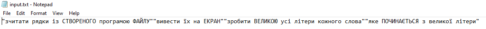

Опанувати теоретичні основи обробки рядків та текстових файлів мовами
функціонального програмування та розробити програми їх реалізації
"#lang scheme
(define (capitalize-initial-letters str)
(string-join
(map
(lambda (word)
(if (string=? (substring word 0 1) (string-upcase(substring word 0 1)))
(string-upcase word)
word))
(string-split str " "))
" "))
(define text '("зчитати рядки із Створеного програмою Файлу"
"вивести їх на Екран"
"зробити Великою усі літери кожного слова"
"яке Починається з великої літери"))
(display text)
(newline)
(define processed-lines (map (lambda (line) (capitalize-initial-letters line)) text))
(display processed-lines)
(let ((port (open-output-file "input.txt")))
(map (lambda (line) (write line port)) processed-lines)
(close-output-port port))
(define (print-file name)
(let ((port (open-input-file name))) ;відкрити порт
(print-file-helper port) ;вивести рядки файлу
(close-input-port port) ; закрити порт
'done))
(define (print-file-helper port) ; допоміжна процедура друку файлу
(let ((action (read port))) ; читати порт
(if (eof-object? action) ;якщо кінець файлу
'done ; робота звкінчена
(begin (write action) ; інакше писати файл
(print-file-helper port)))))
(newline)
(display "Виведення тексту з файлу")
(newline)
(print-file "input.txt")
"
Лабораторна робота дозволила успішно опанувати теоретичні аспекти обробки рядків та текстових файлів у функціональному програмуванні.
Розроблені програми виявилися ефективними для обробки та маніпуляції рядками, а також для читання та запису даних у текстових файлах.
Оволодіння цими концепціями розширило знання та навички у функціональному програмуванні, забезпечуючи можливість практичного
використання цих знань у реальних задачах.